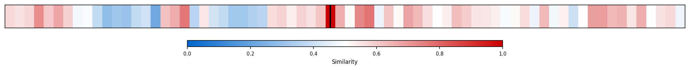
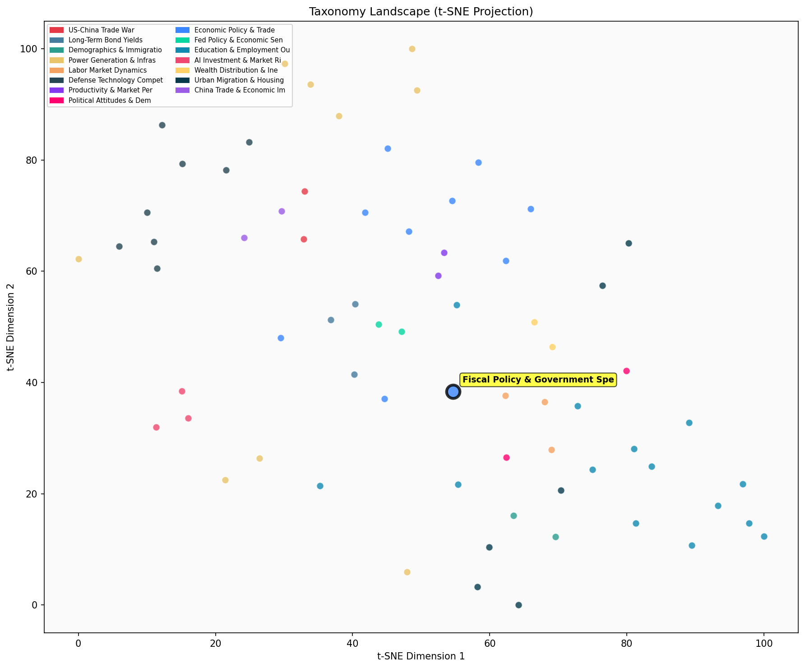

Description
This subcluster examines government fiscal operations, spending patterns, and budgetary policy impacts across healthcare, social security, and welfare programs. Articles predominantly feature quantitative analysis from sources like CBO, KFF, and academic research, focusing on spending trends, program solvency, and policy reform outcomes. Coverage spans federal expenditure growth, trust fund projections, Medicaid expansion effects, and international pension reforms. Unlike sibling clusters emphasizing broad economic performance metrics or climate-integrated strategy, this subcluster specifically dissects government budget mechanics, entitlement program sustainability, and fiscal policy consequences through detailed spending data and demographic impact assessments.
Similarity to All 70 Subclusters
Each cell represents a subcluster. Color intensity shows similarity (blue=low, red=high). Black line marks current subcluster position.
Relationship to Primary Clusters
Average similarity to each of the 15 primary clusters. Larger area = stronger relationship to that cluster.
Taxonomy Landscape
All 70 subclusters positioned by similarity (t-SNE). Current subcluster highlighted with label. Click to enlarge.
Network Connections
Current subcluster at center, connected to related subclusters. Line thickness = similarity strength.
Most Representative Articles
-
1. Since February 2020, real Federal spending has risen 25%. Interest payments account for ⅓ of the inc
-
2. Washington should rely on state block grants and impose ‘per-capita caps’ on Medicaid spending, argu
-
3. Adjusting for inflation and population growth, a WSJ analysis finds “Other health” including Medicai
-
4. James Capretta @AEIecon notes while the increase in per-capita Medicare spending has slowed, there a
-
5. The Social Security and Medicare Board of Trustees estimate that the trust fund for Medicare will be
Edge Cases (Boundary Articles)
-
1. Denmark is raising its retirement age to 70, the highest in Europe. The change will impact all persoThis article is borderline because while it mentions a government policy change (raising retirement age), it focuses more on demographic and social impacts affecting family planning and life structure rather than detailed fiscal operations, spending patterns, or budgetary analysis. The content aligns better with demographic trends and societal changes, which explains its higher similarity to the fertility/family structure cluster.
-
2. The key drivers of elevated European long yields are higher inflation and chronic fiscal deficits, bThis article is borderline because while it mentions fiscal deficits as a driver of bond yields, its primary focus is on Treasury market dynamics and institutional demand shifts (specifically the Dutch pension system transition) rather than analyzing government spending patterns or budgetary policy impacts on programs like healthcare and social security that define the assigned cluster.
-
3. The Danish Welfare Reform of 2006 linked the eligibility age for the state pension to life expectancThis article is borderline because while it mentions fiscal sustainability of the pension system, it focuses primarily on demographic policy (linking retirement age to life expectancy) rather than detailed fiscal operations, spending patterns, or quantitative budgetary analysis that characterizes the cluster. The content is more about demographic-driven policy reform than the government spending analysis that defines this cluster, which explains why it has higher similarity to the fertility/demographic changes cluster.
Original Dendrogram